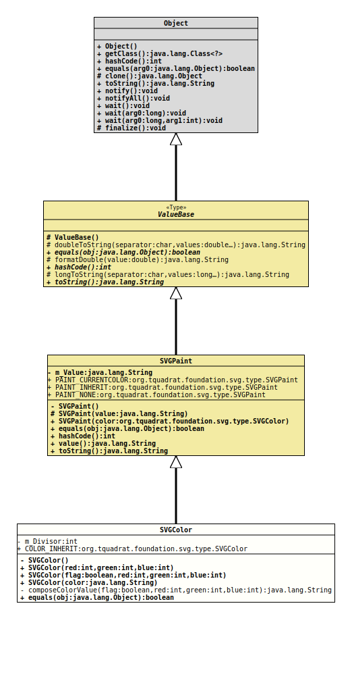

java.lang.Object
org.tquadrat.foundation.svg.type.ValueBase
org.tquadrat.foundation.svg.type.SVGPaint
org.tquadrat.foundation.svg.type.SVGColor
@ClassVersion(sourceVersion="$Id: SVGColor.java 980 2022-01-06 15:29:19Z tquadrat $")
@API(status=STABLE,
since="0.0.5")
public final class SVGColor
extends SVGPaint
{kind=link}
The implementation for SVG values representing colors.
- Author:
- Thomas Thrien (thomas.thrien@tquadrat.org)
- Version:
- $Id: SVGColor.java 980 2022-01-06 15:29:19Z tquadrat $
- Since:
- 0.0.5
- UML Diagram
-

UML Diagram for "org.tquadrat.foundation.svg.type.SVGColor"
{kind=link}
-
Field Summary
FieldsModifier and TypeFieldDescriptionstatic final SVGColorThe type 'inherit'.private static final intThis constant is used to force the colour values into the range from 0 to 255.Fields inherited from class org.tquadrat.foundation.svg.type.SVGPaint
PAINT_CURRENTCOLOR, PAINT_INHERIT, PAINT_NONE -
Constructor Summary
ConstructorsModifierConstructorDescriptionprivateSVGColor()Creates a newSVGColorinstance with the type "inherit".SVGColor(boolean flag, int red, int green, int blue) Creates a newSVGColorinstance from the given colour values.
Allowed are the values from 0 to 255, or 0% to 100% respectively, other values will be normalised accordingly.SVGColor(int red, int green, int blue) Creates a newSVGColorinstance from the given colour values.
Allowed are the values from 0 to 255, other values will be normalised accordingly.Creates a newSVGColorinstance, using the given argument as a CSS colour name.
The given argument may not benullnor the empty String, but it will not undergo any further validation. -
Method Summary
Modifier and TypeMethodDescriptionprivate static final StringcomposeColorValue(boolean flag, int red, int green, int blue) Composes the colour type String from the given colour values.
Allowed are the values from 0 to 255, or 0% to 100% respectively, other values will be normalised accordingly.final booleanMethods inherited from class org.tquadrat.foundation.svg.type.ValueBase
doubleToString, formatDouble, longToString
-
Field Details
-
m_Divisor
This constant is used to force the colour values into the range from 0 to 255.- See Also:
-
COLOR_INHERIT
The type 'inherit'.
-
-
Constructor Details
-
SVGColor
private SVGColor()Creates a newSVGColorinstance with the type "inherit". -
SVGColor
Creates a newSVGColorinstance from the given colour values.
Allowed are the values from 0 to 255, other values will be normalised accordingly.- Parameters:
red- The red component for the colour.green- The green component for the colour.blue- The blue component for the colour.
-
SVGColor
Creates a newSVGColorinstance from the given colour values.
Allowed are the values from 0 to 255, or 0% to 100% respectively, other values will be normalised accordingly.- Parameters:
flag-trueif the given values are percentages,falseif they are absolute values.red- The red component for the colour.green- The green component for the colour.blue- The blue component for the colour.
-
SVGColor
Creates a newSVGColorinstance, using the given argument as a CSS colour name.
The given argument may not benullnor the empty String, but it will not undergo any further validation.- Parameters:
color- The CSS colour name.
-
-
Method Details
-
composeColorValue
Composes the colour type String from the given colour values.
Allowed are the values from 0 to 255, or 0% to 100% respectively, other values will be normalised accordingly.- Parameters:
flag-trueif the given values are percentages,falseif they are absolute values.red- The red component for the colour.green- The green component for the colour.blue- The blue component for the colour.- Returns:
- The colour type String.
-
equals
-
{kind=link}
{kind=link}
{kind=link}
{kind=link}
{kind=link}
{kind=link}
{kind=link}
{kind=link}
{kind=link}